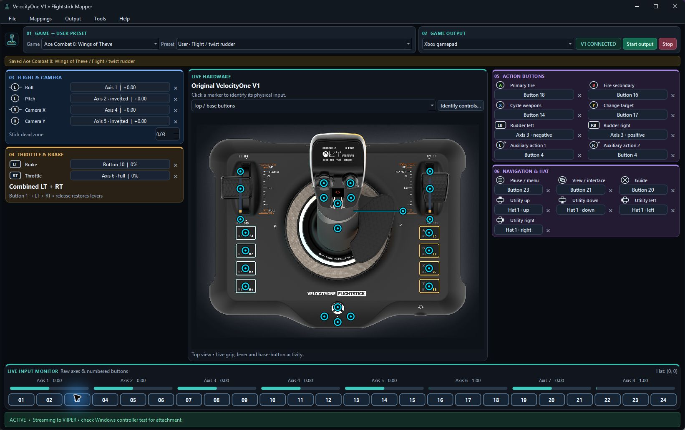

Know what is moving.
Watch stick, slider and button activity. Learn physical inputs and inspect mapped output before taking it into a game.
Turn the original VelocityOne Flightstick V1 into your own gamepad or keyboard/mouse setup—with live input graphics, presets for each game, and macros that work your way.
Original V1 in PC mode · GPL-3.0-only · No x360ce or ViGEm

Watch stick, slider and button activity. Learn physical inputs and inspect mapped output before taking it into a game.
Build your own presets or edit 32 proposed starters across 16 flight and space titles. Keep calibrated directions and name your actions.
Combine simultaneous outputs, ordered steps and delays. Run macros once, by count, while held, or as a toggle.
Release downloads include the Python/Qt/SDL runtime, VIIPER backend and signed USBIP installer. Read the Windows and Microsoft runtime prerequisites.
Read the complete setup guide →
Ctrl+Alt+F12 stops output while the UI is responsive. Keyboard/mouse injection and virtual controllers may be restricted by individual games.
Report measured input identities, reproducible bugs and game-specific results. Include versions and your control scheme; redact personal information from logs and profiles.